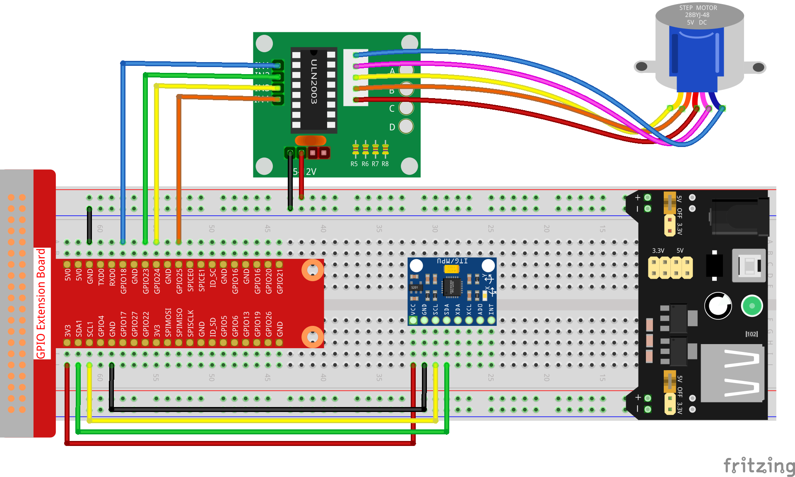

Nota
Ciao e benvenuto nella Community SunFounder su Facebook per gli appassionati di Raspberry Pi, Arduino e ESP32! Approfondisci il mondo di Raspberry Pi, Arduino e ESP32 insieme ad altri appassionati.
Perché unirsi?
Supporto da esperti: Risolvi problemi post-vendita e sfide tecniche con l’aiuto della nostra community e del nostro team.
Impara e Condividi: Scambia suggerimenti e tutorial per migliorare le tue abilità.
Anteprime Esclusive: Ottieni accesso anticipato agli annunci sui nuovi prodotti e alle anteprime.
Sconti Speciali: Approfitta di sconti esclusivi sui nostri prodotti più recenti.
Promozioni e Concorsi: Partecipa a giveaway e promozioni festive.
👉 Pronto a esplorare e creare con noi? Clicca [Qui] e unisciti oggi stesso!
3.1.6 Controllo del Movimento
Introduzione
In questa lezione, realizzeremo un semplice dispositivo per rilevamento e controllo del movimento. L’MPU6050 è utilizzato come sensore e il motore passo-passo come dispositivo di controllo. Con l’MPU6050 montato su un guanto, puoi controllare il motore passo-passo ruotando il polso.
Componenti

Schema Elettrico
T-Board Name |
physical |
wiringPi |
BCM |
GPIO18 |
Pin 12 |
1 |
18 |
GPIO23 |
Pin 16 |
4 |
23 |
GPIO24 |
Pin 18 |
5 |
24 |
GPIO25 |
Pin 22 |
6 |
25 |
SDA1 |
Pin 3 |
||
SCL1 |
Pin 5 |

Procedure Sperimentali
Step 1: Costruisci il circuito.
{kind=link}
Per gli Utenti di Linguaggio C
Step 2: Vai alla cartella del codice.
cd ~/davinci-kit-for-raspberry-pi/c/3.1.6/
Step 3: Compila il codice.
gcc 3.1.6_MotionControl.c -lwiringPi -lm
Step 4: Esegui il file eseguibile.
sudo ./a.out
Dopo l’esecuzione del codice, se l’angolo di inclinazione dell’ MPU6050 sull”Y-axis è superiore a 45 ℃, il motore passo-passo ruota in senso antiorario; se è inferiore a -45 ℃, il motore ruota in senso orario.
Nota
Se non funziona dopo l’esecuzione o appare un messaggio di errore come: "wiringPi.h: No such file or directory", consulta Il codice C non funziona?.
Spiegazione del Codice
double mpu6050(){
acclX = read_word_2c(0x3B);
acclY = read_word_2c(0x3D);
acclZ = read_word_2c(0x3F);
acclX_scaled = acclX / 16384.0;
acclY_scaled = acclY / 16384.0;
acclZ_scaled = acclZ / 16384.0;
double angle=get_y_rotation(acclX_scaled, acclY_scaled, acclZ_scaled);
return angle;
}
mpu6050 ottiene l’angolo di inclinazione nella direzione dell’asse Y.
void rotary(char direction){
if(direction == 'c'){
for(int j=0;j<4;j++){
for(int i=0;i<4;i++)
{digitalWrite(motorPin[i],0x99>>j & (0x08>>i));}
delayMicroseconds(stepSpeed);
}
}
else if(direction =='a'){
for(int j=0;j<4;j++){
for(int i=0;i<4;i++)
{digitalWrite(motorPin[i],0x99<<j & (0x80>>i));}
delayMicroseconds(stepSpeed);
}
}
}
Se la direzione ricevuta è 'c', il motore passo-passo ruota in senso orario; se la direzione è 'a', il motore ruota in senso antiorario. Per maggiori dettagli sul calcolo della direzione di rotazione del motore passo-passo, consulta 1.3.3 Motore Passo-Passo.
int main()
{
setup();
double angle;
while(1) {
angle = mpu6050();
if (angle >=45){rotary('a');}
else if (angle<=-45){rotary('c');}
}
return 0;
}
L’angolo di inclinazione nella direzione dell’asse Y viene letto dall” mpu6050 e, se è superiore a 45 ℃, il motore passo-passo ruota in senso antiorario; se inferiore a -45 ℃, il motore ruota in senso orario.
Per Utenti Python
Step 2: Vai alla cartella del codice.
cd ~/davinci-kit-for-raspberry-pi/python/
Step 3: Esegui il file eseguibile.
sudo python3 3.1.6_MotionControl.py
Dopo l’esecuzione del codice, se l’angolo di inclinazione dell”mpu6050 sull’asse Y-axis is larger than 45 ℃, the stepper motor rotates anticlockwise; if è maggiore di 45 ℃, il motore passo-passo ruota in senso antiorario; se inferiore a -45 ℃, ruota in senso orario.
Codice
Nota
Puoi Modificare/Reimpostare/Copiare/Eseguire/Arrestare il codice qui sotto. Prima di fare ciò, vai al percorso del codice sorgente come davinci-kit-for-raspberry-pi/python.
import RPi.GPIO as GPIO
import smbus
import math
import time
# Registri di gestione dell'alimentazione
power_mgmt_1 = 0x6b
power_mgmt_2 = 0x6c
bus = smbus.SMBus(1)
address = 0x68
bus.write_byte_data(address, power_mgmt_1, 0)
# Pin del motore passo-passo
motorPin = (18,23,24,25)
rolePerMinute =15
stepsPerRevolution = 2048
stepSpeed = (60/rolePerMinute)/stepsPerRevolution
# mpu6050
def read_byte(adr):
return bus.read_byte_data(address, adr)
def read_word(adr):
high = bus.read_byte_data(address, adr)
low = bus.read_byte_data(address, adr+1)
val = (high << 8) + low
return val
def read_word_2c(adr):
val = read_word(adr)
if (val >= 0x8000):
return -((65535 - val) + 1)
else:
return val
def dist(a,b):
return math.sqrt((a*a)+(b*b))
def get_y_rotation(x,y,z):
radians = math.atan2(x, dist(y,z))
return -math.degrees(radians)
def get_x_rotation(x,y,z):
radians = math.atan2(y, dist(x,z))
return math.degrees(radians)
def mpu6050():
accel_xout = read_word_2c(0x3b)
accel_yout = read_word_2c(0x3d)
accel_zout = read_word_2c(0x3f)
accel_xout_scaled = accel_xout / 16384.0
accel_yout_scaled = accel_yout / 16384.0
accel_zout_scaled = accel_zout / 16384.0
angle=get_y_rotation(accel_xout_scaled, accel_yout_scaled, accel_zout_scaled)
return angle
# Motore passo-passo
def rotary(direction):
if(direction == 'c'):
for j in range(4):
for i in range(4):
GPIO.output(motorPin[i],0x99>>j & (0x08>>i))
time.sleep(stepSpeed)
elif(direction == 'a'):
for j in range(4):
for i in range(4):
GPIO.output(motorPin[i],0x99<<j & (0x80>>i))
time.sleep(stepSpeed)
def setup():
GPIO.setwarnings(False)
GPIO.setmode(GPIO.BCM)
for i in motorPin:
GPIO.setup(i, GPIO.OUT)
def loop():
while True:
angle=mpu6050()
if angle >=45 :
rotary('a')
elif angle <=-45:
rotary('c')
def destroy():
GPIO.cleanup()
if __name__ == '__main__':
setup()
try:
loop()
except KeyboardInterrupt:
destroy()
Spiegazione del Codice
def mpu6050():
accel_xout = read_word_2c(0x3b)
accel_yout = read_word_2c(0x3d)
accel_zout = read_word_2c(0x3f)
accel_xout_scaled = accel_xout / 16384.0
accel_yout_scaled = accel_yout / 16384.0
accel_zout_scaled = accel_zout / 16384.0
angle=get_y_rotation(accel_xout_scaled, accel_yout_scaled, accel_zout_scaled)
return angle
mpu6050 ottiene l’angolo di inclinazione nella direzione dell’asse Y.
def rotary(direction):
if(direction == 'c'):
for j in range(4):
for i in range(4):
GPIO.output(motorPin[i],0x99>>j & (0x08>>i))
time.sleep(stepSpeed)
elif(direction == 'a'):
for j in range(4):
for i in range(4):
GPIO.output(motorPin[i],0x99<<j & (0x80>>i))
time.sleep(stepSpeed)
Se la direzione ricevuta è c, il motore passo-passo ruota in senso orario; se è a, il motore ruota in senso antiorario. Per maggiori dettagli sul calcolo della direzione di rotazione del motore passo-passo, consulta 1.3.3 Motore Passo-Passo.
def loop():
while True:
angle=mpu6050()
if angle >=45 :
rotary('a')
elif angle <=-45:
rotary('c')
L’angolo di inclinazione nella direzione dell’asse Y viene letto da mpu6050. Se è superiore a 45 ℃, viene chiamata la funzione rotary() per far ruotare il motore passo-passo in senso antiorario; se è inferiore a -45 ℃, il motore ruota in senso orario.